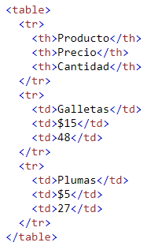
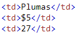
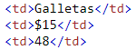
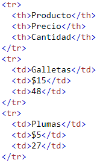

Regresar al inicio
Como bien se sabe, una tabla consta de celdas de tabla dentro de filas y columnas, en HTML, esto se define con las etiquetas <table>, <tr>, <th>, <td> para ver detalladamente como se crean dentro de HTML, se mostrará el siguiente código:
Al utilizar este código, nos da la siguiente tabla:
| Producto | Precio | Cantidad |
|---|---|---|
| Galletas | $15 | 48 |
| Plumas | $5 | 27 |
Cada celda de la tabla está definida por una etiqueta <td> y </td>. Para visualizar esta parte, tomando como ejemplo la tabla y el código anterior, se puede observar que dentro de <td> y </td> esta la información del producto, su precio, y la cantidad.
 Se puede ver claramente que esta información del código coincide con la que se muestra en la tabla.
Cada fila de la tabla comienza con una etiqueta <tr> y termina con una etiqueta </tr>. Tomando como referencia el ejemplo anterior, se puede observar que antes de agregar contenido a las celdas con <td> y </td>, primero se define una fila.
 Para agregar encabezados a una tabla, es necesario hacer uso de <th> y </th> en vez de <td> y </td>, como tal, cumplen la misma función, agregar contenido a una celda, pero con <th> y </th> el texto dentro de la celda estará marcado.
Tomando el ejemplo anterior, la celda que tiene el texto de producto, precio y cantidad utiliza un encabezado de tabla, como es posible observar en la siguiente imagen:
Se puede ver claramente que esta información del código coincide con la que se muestra en la tabla.
Regresar al inicio